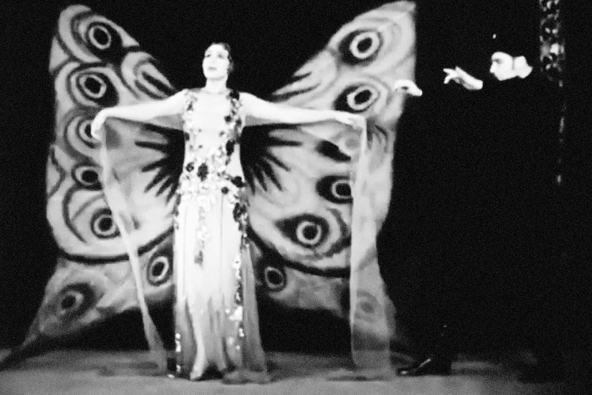
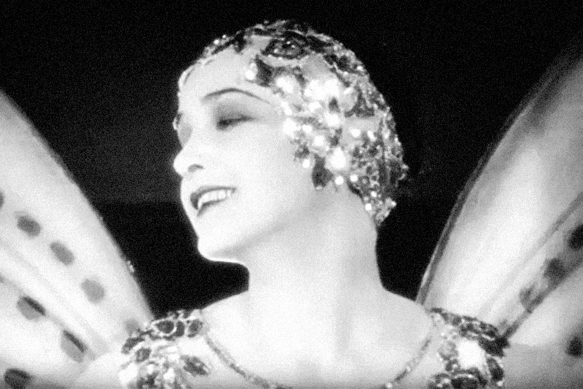

Specimen No. Ⅺ | Written by Maya Lee
In the film, which marks the zenith of the aestheticism of 1920s silent cinema, the metamorphosis of the butterfly perfectly visualises the transition from a repressed other to a free subject. The female protagonist appears as a dazzling butterfly specimen, subjected to the male gaze—a blend of male admiration and desire.[1] Her stage costumes and gestures are merely objects meticulously designed to provide visual pleasure to the audience, resembling the state of a stuffed butterfly pinned to a collection board.

To satisfy the spectator's gaze, the woman undergoes a flamboyant metamorphosis into a butterfly.
However, as the film unfolds, the butterfly metaphor shifts drastically from fixation to liberation. The framework of the mysterious and fragile woman, defined and confined by men, served as both a cocoon for survival and a prison that she had to tear through. The moment she confronts her true desires and makes an autonomous choice, the fluttering of the butterfly’s wings on screen is no longer a performance of seduction but a bold declara-tion of her pursuit of freedom.

The cynicism in the title, < You Never Know Women >, paradoxically proves the existence of a profound inner world and an independent vitality that the male gaze can never truly capture. Ultimately, in this film, becoming a butterfly is a record of the most brilliant and subjective metamorphosis—refusing to remain a decorative object and resolutely soaring to a place where no hand can reach. ⁋